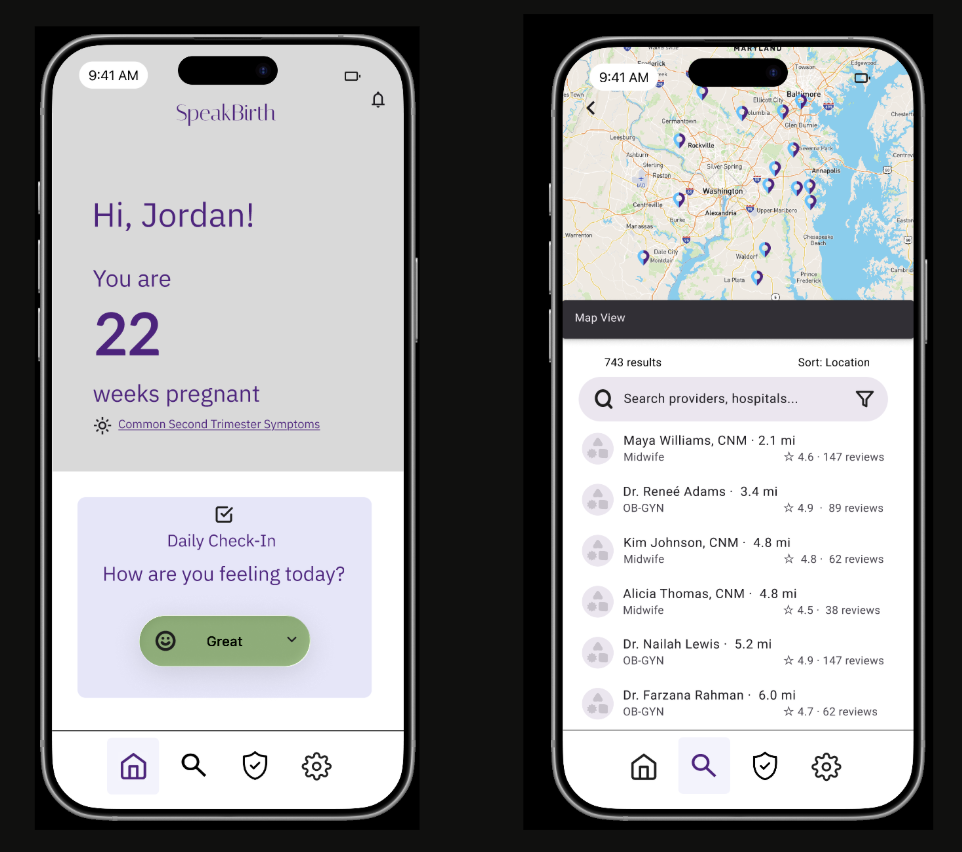
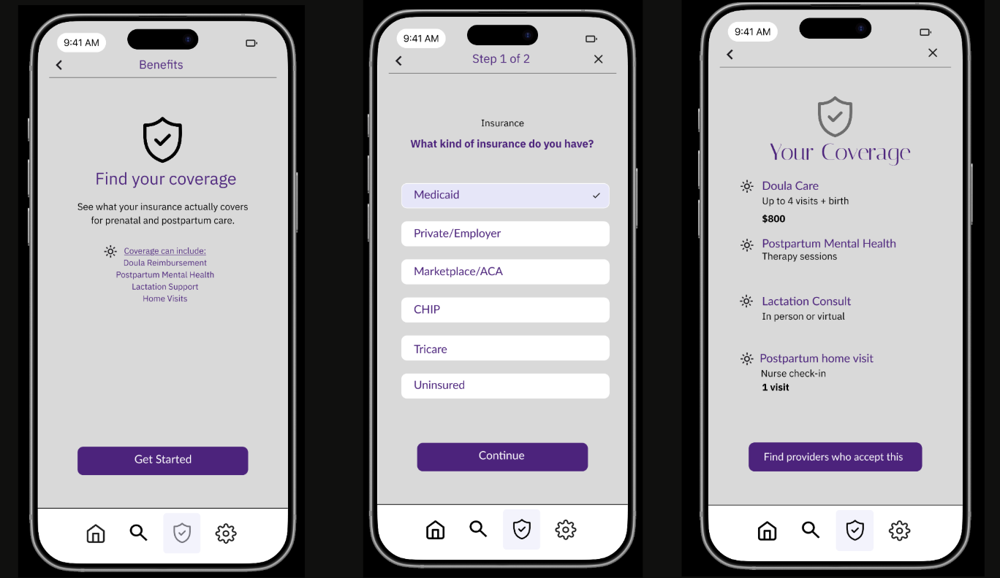
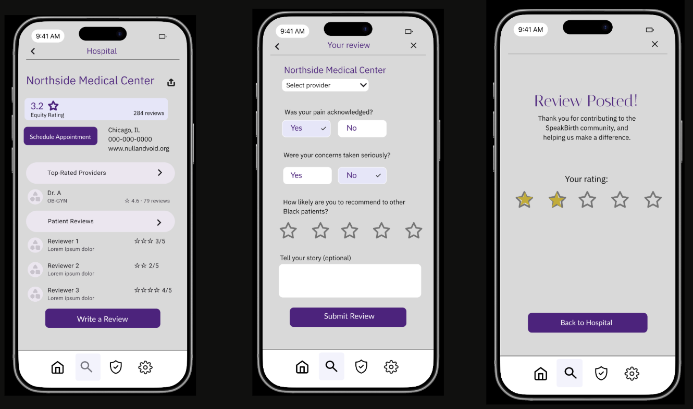

Tools, screens, and feedback from the prototype phase.
The prototype was built as a set of high-fidelity static screens, designed to be screenshot-ready for both the report and presentation. The goal was to communicate functionality and visual hierarchy clearly enough that a non-designer could understand the flow without narration.
The prototypes intentionally feature purple accents, as this color represents dignity, justice, and gender equality. On Figma I utilized the iOS UI Kit from Apple Design Resources to make sure that sizing, spacing, and phone features were all proportionate.
Each of the three core tasks is represented as a four-screen flow in the high-fidelity prototype. The screens are designed to be screenshot-ready for embedding in the report and presentation.
Home → Filters → Results → Provider detail. The user enters their location, applies equity-focused filters, and lands on a provider profile with a clear breakdown of how that provider is rated by Black patients across three equity dimensions.

Entry → Insurance type → Coverage results → Filtered providers. A two-question quiz surfaces the user's actual covered benefits, with a clear handoff to a pre-filtered list of providers who accept that coverage.

Hospital profile → Filtered reviews → Review form → Confirmation. Reviews are submitted through a structured equity rubric and verified before posting. Other users can filter by care type, time period, and rating.

Feedback came from informal peer review and from re-checking the prototype against the original research findings. A few themes: